Treatment Control
1 18 49
2 74 100
3 65 47
4 24 71
5 25 89Lecture: Study Design & Sampling
Designing studies
Design
Sampling
Causality, natural vs. manipulative experiments, replication and pseudoreplication, controls, randomization, sampling designs, and a priori/post hoc power analysis.
Where We Left Off
Covered last time:
- What are the assumptions again, and how do you assess them?
- What to do when assumptions fail:
- Mann-Whitney Wilcoxon rank-sum test
- Permutation tests
- There’s also a paired Wilcoxon signed-rank test — it uses only the sign (+, 0, or −) of each pair’s difference, so it’s possible but not very powerful or widely used
Note
✅ Key idea from last lecture
A good test choice can’t rescue a badly designed study. Today is about the design decisions that come before you ever pick a test.
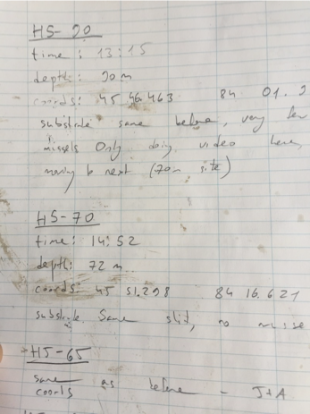
Today’s Overview
Today we’ll cover Chapter 1 in Whitlock and Schluter:
- Study design
- Causality in ecology
- Experimental design: replication, controls, randomization, independence
- Sampling in field studies
- Power analysis: a priori and post hoc
- Study design and analysis
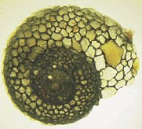

Lamberti and Resh 1983
Part 1 · Study Design Fundamentals
Study Design Fundamentals
- Data analysis has close links to study design
- Statistics cannot save a poorly designed study!
- Key question: what is your research question?
Common scientific questions:
- Spatial/temporal patterns in variable Y? — what are the problems with this data?
- Effect of factor X on variable Y? — what should you be worried about, and how do you fix it?
- Are values of variable Y consistent with hypothesis H?
- What is the best estimate of parameter θ?
Note
📖 Reference
Gotelli & Ellison, A Primer of Ecological Statistics, Ch. 6 — Designing Successful Field Studies.

What sort of experiment is this design, and what are the issues with it?
Part 2 · Causality in Ecology
Causality in Ecology — Introduction
- Common question: what is the cause of Y?
- Causality is challenging; modern statistics lacks clear language for causality
- Strength of causal inference varies with study design!
- Key factor: control of confounding variables, non-independence, and correlated variables
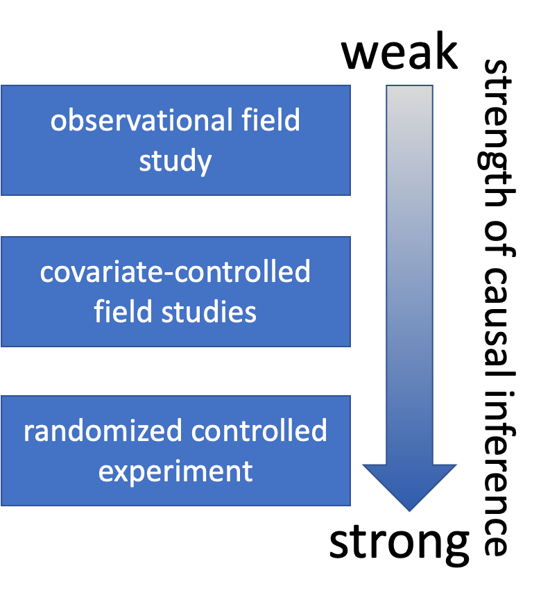
Causality in Ecology — Framework
- Common question: what is the cause of Y?
- Causality is challenging; modern statistics lacks clear language for causality
- Strength of causal inference varies with study design
- Key factor: control of confounding variables, non-independence, and correlated variables
Causality Example
Example: Spider and lizard populations on small islands
Hypothesis: On small islands, lizard predation controls spider density
We’re interested in causality. How do we get there?
- What type of experiment is this?
- What are the potential problems with testing this hypothesis?

Part 3 · Natural vs. Manipulative Experiments
Natural Experiments
- Not really experiments at all!
- Utilizes natural variation in the predictor variable
- E.g., survey plots across a natural gradient of lizard density
Potential problems:
- Cannot determine the direction of the cause ↔︎ effect relationship
- Uncontrolled variables may affect results
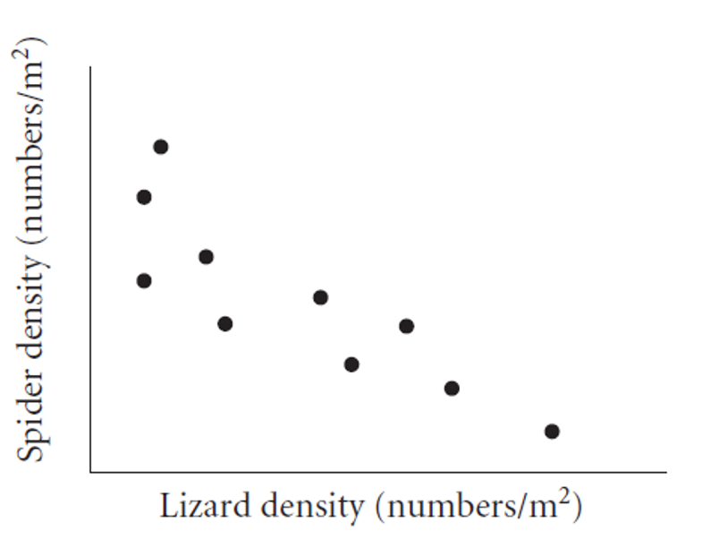
Strengthening Natural Experiments
Good design: stronger inference from natural experiments.
- Reduce confounding (select plots similar in relevant ways)
- Adjust for confounding (measure relevant covariates)
- Identify and measure potential confounding variables
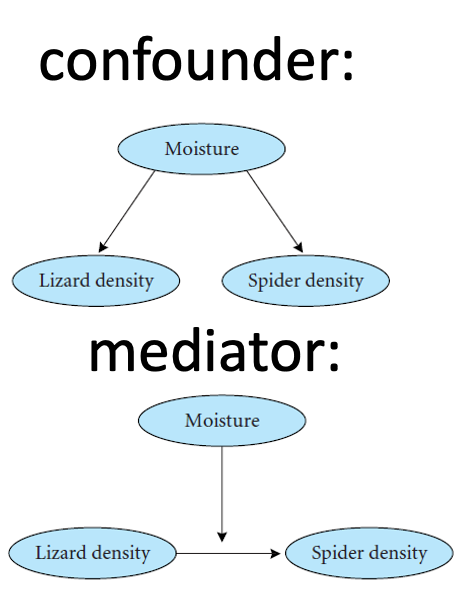
Manipulative Experiments
The experimenter directly manipulates the predictor variable and measures the response.
Randomized, controlled trials: the gold standard.
Challenges:
- Often restricted to small “plots”; a scale-replication trade-off
- Often restricted to small, short-lived organisms
- Often limited to a small number of treatments; a treatment-replication trade-off
- Still requires careful control of confounding variables!

Part 4 · Experimental Design Principles
Experimental Design Principles
Main problem of study design & interpretation: confounding variables.
- Is the result due to X, or other factors?
Good study design seeks to eliminate confounding through:
- Replication
- Randomization
- Controls
- Independence
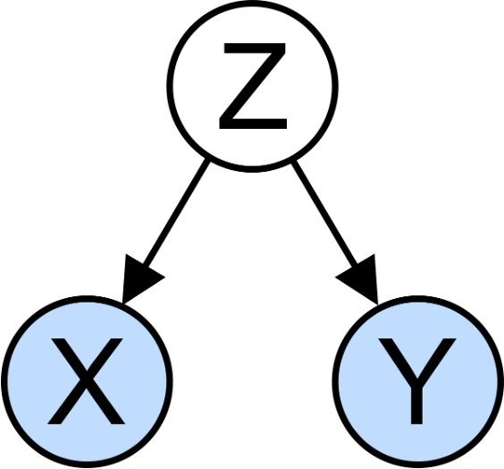
Replication
Replication is important because:
- Ecological systems are variable
- Many statistical methods need an estimate of that variability
Without appropriate replication: is the difference due to the manipulation, or something else?
Warning
⚠️ Watch out!
Replication must be on the appropriate scale — match the scale of replication to the population of interest, or you’ll run into pseudoreplication (Hurlbert 1984, Pseudoreplication and the Design of Ecological Field Experiments).
Replication Examples
- Example 1: Effects of forest fire on soil invertebrate diversity — replicate samples from burnt and unburnt parts of a single forest. What hypothesis is this design addressing?
- Example 2: Effects of copper on barnacle settling — 2 aquaria (+Cu, control), 5 settling plates in each. Are settling plates replicates?
- Example 3: Effects of sewage discharge on water quality — 10 water samples above discharge, 10 below. Are samples replicates?
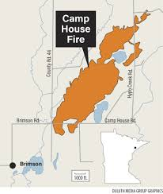
Consequences of Pseudoreplication
When you pseudoreplicate, you:
- Underestimate variability
- Increase the Type I error rate
Replicates must be on a scale appropriate to the population (and hypothesis!) of interest:
- Different burnt/unburnt forest areas
- Different aquaria
- Different plants and streams
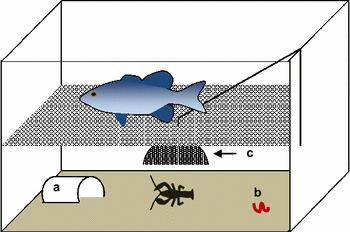
When Replication Is Difficult
What if replication is impossible, difficult, or expensive?
Example: effect of temperature on phytoplankton growth — 4 chambers (5, 10, 15, 20°C), 10 beakers in each. Are beakers true replicates?
Possible solutions:
- Rerun the experiment a few times, changing the temperature of chambers — block by time
- Try to account for all possible differences between chambers (light levels, humidity, contamination) — block by chamber

Controls or Reference?
Key question: is the response due to the manipulation/hypothesized mechanism, or an external factor?
Controls help address this question:
- Experimental units treated exactly as the manipulated units, except for the manipulation under investigation
- Can be tricky to implement; requires careful thought
Examples:
- In toxicology, controls and treatment groups must both be injected, but the control does not receive the substance under study
- Predator exclosures often produce “cage effects” — you need two controls: a grazer/predator control and a “cage control”

Activity: Designing Controls
Warning
Activity: designing controls for pine experiments
Work in small groups to design appropriate controls for each experiment:
- Testing whether pine needle length is affected by a particular fertilizer
- Testing whether pine needle density affects water retention during drought, using enclosed branches
- Testing whether sunlight exposure affects pine seedling growth, using shade cloth
For each experiment, identify:
- What would be appropriate controls?
- What factors need to be controlled besides the main variable?
- Could there be “cage effects” or similar issues to consider?
Independence
Independence of observations is an assumption of many statistical methods. Events are independent if the occurrence of one has no effect on the occurrence of another.
- E.g., offspring of one mother for treatment, offspring of another for control
Temporal/spatial autocorrelation: a violation of independence.
- Values of variables at a certain place/time are correlated with values at another place/time
- “Everything is related to everything, but near things are more related than distant things”
- Special methods exist to adjust for autocorrelation
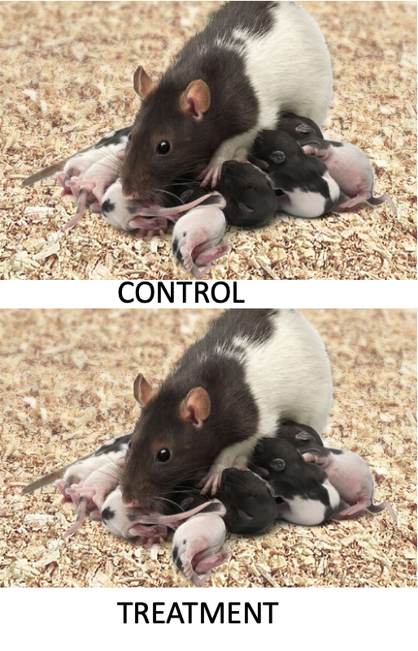
Randomization
Randomization helps deconfound “lurking” variables — it attempts to equalize the effects of confounders.
Random sampling from a population:
- Experimental units should represent a random sample from the population of interest
- Ensures unbiased population estimates and inference
- E.g., animals in an experiment are a random subset of all animals that could have been used
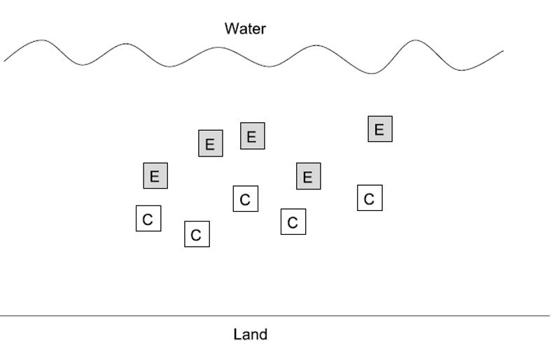
Randomization in Practice
Allocation of experimental units to treatment/control:
- Experimental units must have an equal chance of being allocated to control or experimental group
- Properly done by random number generation
Randomization is essential at two levels:
- Random selection from the population
- Random assignment to treatments
Part 5 · Sampling Design in Field Studies
Sampling Design — Simple Random
Simple random design:
- All individuals/sampling units have an equal chance of being selected
- Assign a number to all possible units, select units using a random number generator
- Often tricky in ecology; haphazard sampling is a common (imperfect) alternative
- Most population estimates and tests assume random sampling
Note
📖 Reference
Gotelli & Ellison, Ch. 7 — A Bestiary of Experimental and Sampling Designs, covers all four sampling designs on this and the following three slides.
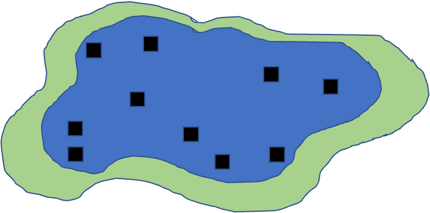
Sampling Design — Stratified
Stratified designs: if there are distinct strata (groups) in the population, you may want to sample each independently.
- Samples collected from each stratum randomly, n proportional to the “size” of the stratum
- Means and variances need to be estimated using a different procedure; strata are included in the model
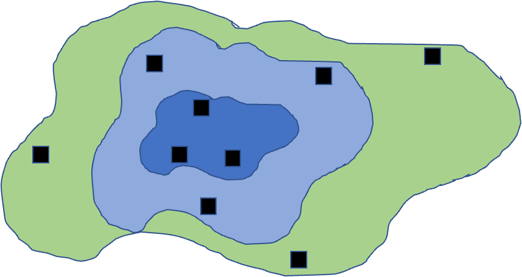
Sampling Design — Cluster
Cluster designs:
- Focus on sampling subunits nested in larger units
- Used when other designs are impractical (e.g., due to cost)
- Mean calculation is easy; variance needs a modified procedure
- Nested ANOVA is often the appropriate analytical method
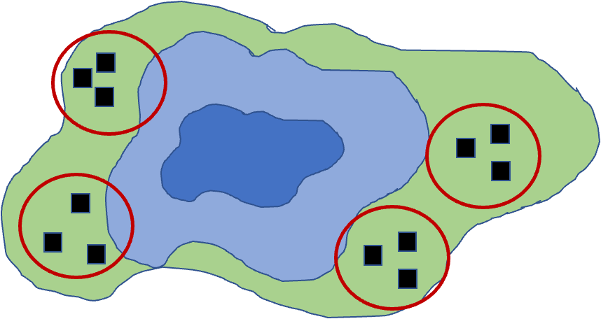
Sampling Design — Systematic
Systematic designs:
- Sampling units evenly dispersed — “transect” sampling is common in ecology
- Used to determine changes along a gradient
- Risk: might coincide with some natural pattern
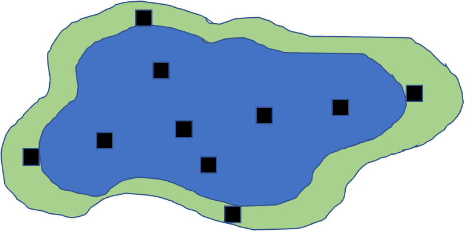
Activity: Field Sampling Pine Trees
Note
Activity: field sampling pine trees
Let’s consider sampling pine needles across campus:

In groups of 3–4, design a sampling strategy to:
- Estimate average needle length across campus (simple random sampling)
- Compare needle lengths between north and south campus areas (stratified sampling)
- Study how needle length changes with distance from the main road (systematic sampling)
For each strategy, describe:
- How many samples you would take
- Where you would take them
- What additional variables you might measure
Part 6 · Power Analysis
Power Analysis Wrap-Up
- Power is an important aspect of experimental design:
- Low power → higher likelihood of Type II error (1 − β)
- A study’s power tells us how likely we are to see an effect if one really exists
- Power analysis can be used:
- Before the experiment (a priori): how many samples do we need? What effect size can we detect?
- After the experiment (post hoc): was a finding of no effect due to a lack of true effect, or poor design?
- Power is a function of: effect size (ES), sample size (n), standard deviation (σ), and α (typically 0.05)
\[\text{Power} \propto \frac{ES \cdot \alpha \cdot \sqrt{n}}{\sigma}\]
Note
📖 Reference
Whitlock & Schluter, Ch. 14 — Designing Experiments, covers planning the sample size needed for a study.
A Priori Power Analysis
Using power analysis to plan experiments:
- Sample size calculation: how many samples will be needed? Need to know: desired power, variability, significance level, effect size.
- Effect size calculation: what kind of effect can we find, given a particular design? Need to know: desired power, variability, significance level, n.
Cohen’s d — a standardized measure of effect size, particularly for comparing two means:
- 0.2 = small effect, 0.5 = medium effect, 0.8 = large effect
Tip
📖 Why standardize?
Cohen’s d helps determine the practical significance of a finding, as opposed to just statistical significance (p-values). A Cohen’s d of 0.8 means the groups differ by 0.8 standard deviations — large enough to be substantial in practical terms.
A Priori Power Analysis — Example
How many samples do you need to find this difference?
# A priori power analysis for t-test
# How many samples needed per group?
effect_size <- 0.8 # Cohen's d
significance <- 0.05
desired_power <- 0.8
pwr.t.test(d = effect_size,
sig.level = significance,
power = desired_power,
type = "two.sample")
Two-sample t test power calculation
n = 25.52458
d = 0.8
sig.level = 0.05
power = 0.8
alternative = two.sided
NOTE: n is number in *each* group
Tip
🖐 Notice
pwr.t.test() solves for whichever argument you leave out — here, n. Leave out a different argument (e.g., power) and it solves for that instead.
Post Hoc Power Analysis
- Imagine you did not reject the null hypothesis — is the result still worth publishing?
- Is a non-significant result due to low power (poor design), or an actual no-effect situation?
- You have n and an estimate of σ
- You need to define the effect size you wanted to detect
- In return, you get an estimate of the experiment’s power
- Cohen’s d is calculated as: d = (Mean1 − Mean2) / SD_pooled
Tip
🖐 Why it matters
Post hoc power can help convince reviewers that you are a good experimenter, but there really is no effect — please publish my non-significant finding!
Post Hoc Power Analysis — Example
# Post hoc power analysis
# If we had n = 20 per group
effect_size <- 0.5 # Medium effect size
significance <- 0.05
sample_size <- 20 # per group
pwr.t.test(n = sample_size,
d = effect_size,
sig.level = 0.05,
type = "two.sample")
Two-sample t test power calculation
n = 20
d = 0.5
sig.level = 0.05
power = 0.337939
alternative = two.sided
NOTE: n is number in *each* group
Note
✅ Key idea
Same function as a priori power analysis — pwr.t.test() — just with n supplied and power left out to solve for instead.
Activity: Power Analysis for a Pine Needle Experiment
Important
Activity: power analysis for a pine needle experiment
Let’s design a study to compare needle lengths between exposed and sheltered pine trees:
# Based on pilot data, we have these estimates:
exposed_mean <- 75 # mm
sheltered_mean <- 85 # mm
pooled_sd <- 12 # mm
effect_size <- abs(exposed_mean - sheltered_mean) / pooled_sd
effect_size[1] 0.8333333pwr.t.test(d = effect_size,
sig.level = 0.05,
power = 0.8,
type = "two.sample")
Two-sample t test power calculation
n = 23.60467
d = 0.8333333
sig.level = 0.05
power = 0.8
alternative = two.sided
NOTE: n is number in *each* groupActivity: Power Curve Visualization
Important
Activity: power analysis for a pine needle experiment

Questions:
- How many trees should we sample to achieve 80% power?
- If we can only sample 5 trees per group, what is our power?
- How would increasing variability (SD) affect our sample size requirements?
Part 7 · Wrap-Up
Study Design and Analysis
- Study design is closely linked to statistical analysis
- Recall: categorical vs. continuous variables; dependent vs. independent variables
- The nature of your variables dictates the analytical approach:
- Match your analysis to your design
- You cannot “fix” a poor design with fancy statistics

Summary and Take-Home Messages
Key concepts we covered today:
- Study design is critical — statistics cannot save poor design
- Natural vs. manipulative experiments — different approaches to causality
- Principles of good design: replication at the right scale, proper randomization, appropriate controls, independence
- Power analysis — planning for sufficient sample size
- Match analysis to design — your statistical approach should follow from your experimental design
Important
Remember:
- Correlation ≠ causation
- Beware of pseudoreplication
- Design before you collect data
- Consider practical constraints
- Report everything transparently
References and Additional Resources
- Gotelli, N. J., & Ellison, A. M. (2012). A Primer of Ecological Statistics (2nd ed.). Sinauer Associates.
- Hurlbert, S. H. (1984). Pseudoreplication and the design of ecological field experiments. Ecological Monographs, 54(2), 187–211.
- Quinn, G. P., & Keough, M. J. (2002). Experimental Design and Data Analysis for Biologists. Cambridge University Press.
- Zuur, A. F., Ieno, E. N., & Elphick, C. S. (2010). A protocol for data exploration to avoid common statistical problems. Methods in Ecology and Evolution, 1(1), 3–14.